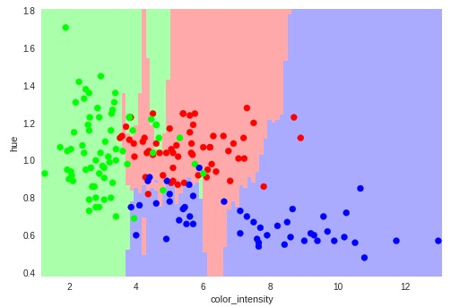
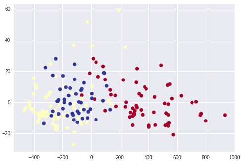
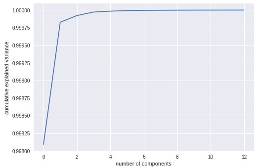

Portfolio Tasks 9 & 10
This task involved conducting two machine learning analyses
(Classification and Dimensionality Reduction). The main hypothesis that I explore is how well the KNN and SVC models can classify different wines based only on two
features.
I find that the KNN and SVC models are decent classifiers. Subsequently, I find that even with only two dimensions, the different wines are still seperated fairly well.
Figure 1:
Plot of 178 wines from 3 different winemakers based on each wine's colour intensity and hue (shaded areas reflects prediction of KNN model about which winemaker grew the
wine)

Figure 2:
After using the PCA model to implement a Dimensionality Reduction, each axis represents one dimension (axes have no meaning)

Figure 3:
The original dataset had 13 features to describe each wine. The graph below shows that with only a couple features one can capture almost all of the variance
